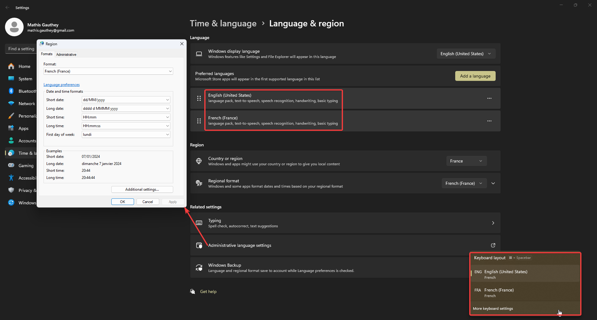

Windows Clean Install Guide¶
In this post, I'll show you how I configure my windows installs.
Warning
Do not use ShutUp10, BleachBit and other scripts that could explode Windows. Don't touch the OS, the OS must remain intact.
Verify Windows Version¶
- Verify you're on Windows 11 Pro. Otherwise, buy or change it. There's cheap grey market keys everywhere.
Remove Unwanted Programs¶
Control Panel¶
- One Drive → Unlick computer before removing…
- Sign int
- Remove everything in backup folder settings
- Uncheck every sync in the sync settings
- Remove OneDrive folder from User folder
- Unlink account
- Quit OneDrive
- Uninstall
- Remote Desktop Connection
Add or Remove Programs¶
- You can safely remove almost… Everything. Just keep the calculator and notepad I guess.
- Don't forget to clean the start menu as well…
Start-up App Using Task Manager¶
- Remove unwanted apps there.
Updates¶
- Microsoft updates should be fine by default.
- But go launch Microsoft store apps updates manually now. It'll helps for
Terminalsettings.
Controls¶
Enhance Mouse Precision¶
- Settings > Mouse > Additional mouse settings > Pointer Options
- Uncheck
Enhance pointer precision.
Disable Alt + Maj Shortcut¶
- Spam ALT+SHIFT
- Click on the notification
- Set key sequence to
None
Language & Time¶
Language¶

- Download
language packs,text to speechandspeech recognitionfor your languages. - Language for non-unicode program should be English US in the
region format. - But then to make it save properly :
1. Open Control Panel, select Clock and Region.
2. Click Region.
3. Select Administrative tab.
4. Click on Copy Settings.
5. Under Copy your current settings to, check the box for Welcome screen and system accounts. Click OK and restart your PC.
Issues with Old Language Keyboards¶
If you have issues with languages and keyboard layouts coming back, try this :
Success
I had a similar problem to the OP: for the English language, I had US, Canadian Multilingual Standard as well as Canadian French as keyboard layouts and I could not remove the last two.
As I do not have administrator rights on my work PC, I could not use @harrymc's solution by editing the registry but I am able to edit language options. I tried the following and it worked for me:
- Add the extra unwanted keyboard layouts using the PC Settings > Time & Language > Language menu so they're all actually listed.
- Save.
- Afterwards, come back to the Languages screen and remove the extra layouts.
- Again, press Save.
I'm not quite sure how nor why but now those extra keyboard layouts are gone.
EDIT: I'm not sure if it's new or it existed when I added that solution but this solution does not persist through reboots.
You can also try uninstalling old keyboard layouts using :
WIN + R
lpksetup # OPEN LANGUAGE PACK MANAGER
lpksetup /u en-gb # EXAMPLE UNINSTALLING EN-GN KEYBOARD
Time Zone¶
- Make sure the
Set time zone automaticallyis checked as well as every other automated settings.
Colors and Theme¶
Remove Trash Icon¶
- Start > Settings > Personalization > Themes > Desktop icon settings.
- Uncheck
RecycleBin
Background¶
- Set
Windows Spotlight - Right clic to desktop > View > Uncheck
Show Desktop Icons
Colors¶
Dark mode- Check
Transparency effects - Accent color to
Automatic - Check
Show accent color on Start and taskbar - Check
Show accent color on title bars and windows borders
Night Light¶
- Schedule
sunset to sunrise
Taskbar¶
- Uncheck every
taskbar itemssettings - Uncheck every
system tray iconssettings - Let the rest as default
Disable New Context Menu (Windows 11)¶
Disable new context menu:
reg.exe add "HKCU\Software\Classes\CLSID\{86ca1aa0-34aa-4e8b-a509-50c905bae2a2}\InprocServer32" /f /ve
Restore new context menu:
Sound¶
- Sound settings > Communications >
Do Nothing - If you use a Bose headset : Fix Bose QC35 Headset Communication Issue on Windows 11
Storage¶
Storage Sense¶
- Activate
storage sense - Check
Cleanup of temporary files - Check
Automatic User content cleanup - Run storage sense
Every month - Delete files in my recycle bin if they have been there for over
30 days - Delete files in my Downloads folder if they haven't been opened for more than
30 days
Show Hidden Files and Drives¶
- Win + E > Triple dots > Options > View
- Check
Show hidden files, folders and drives - Uncheck
Hide extensions for known file types
Gaming¶
Disable Game Mode¶
- Basically, go inside windows settings, gaming, and uncheck everything.
Disable Core Isolation¶
- Windows Security > Core isolation > Uncheck
Memory integrity.
Attention
Ne faire ceci qu'en cas de performances gaming pas suffisantes. Autant le laisser si aucun problème n'est à relever.
Power Options¶
Disable Fast Startup and Hibernation¶
- Go to
Control Panel > Hardware and Sound > Power Options > System Settings - Click
Change settings that are currently unavailable - Uncheck
Turn on fast start-up - Uncheck
Hibernateor use commandpowercfg -h off
Closing the Lid¶
- Set everything to
sleep.
Turn Off Display and Sleep¶
- Auto turn of display after
1 min, butno auto sleep.
Remove Windows Telemetry¶
Privacy and Security > General¶
- Uncheck everything.
Privacy and Security > Speech¶
- Uncheck everything.
Privacy and Security > Inking & Typing Personalization¶
- Uncheck everything.
Privacy and Security > Diagnostics & Feedback¶
- Uncheck everything.
Privacy and Security > Activity History¶
- Uncheck everything.
Privacy and Security > Search Permissions¶
- Uncheck everything.
Privacy and Security > Searching Windows¶
- Change nothing.
Install Scripts¶
Install WSL¶
- Open CMD as admin
wsl --install- Reboot.
- Username :
mat - Password : You know what.
Scripts¶
Taskbar Setup¶

Windows Terminal¶
Startup¶
- Default profile
Ubuntu - Default terminal app
Terminal
Is your profile using wsl.exe -d Ubuntu or Ubuntu.exe?
The latter will not respect the starting directory, and always opens in $HOME
Appearance¶
- Application theme
Use windows theme Use acrylic in tab row
Color Scheme¶
- Create new color scheme
- Name it Github Dark
- Copy this in your
settings.json
{
"name": "GitHub Dark",
"black": "#000000",
"red": "#f78166",
"green": "#56d364",
"yellow": "#e3b341",
"blue": "#6ca4f8",
"purple": "#db61a2",
"cyan": "#2b7489",
"white": "#ffffff",
"brightBlack": "#4d4d4d",
"brightRed": "#f78166",
"brightGreen": "#56d364",
"brightYellow": "#e3b341",
"brightBlue": "#6ca4f8",
"brightPurple": "#db61a2",
"brightCyan": "#2b7489",
"brightWhite": "#ffffff",
"background": "#101216",
"foreground": "#8b949e",
"selectionBackground": "#3b5070",
"cursorColor": "#c9d1d9"
}
Defaults¶
Run as administrator
Defaults > Appearance¶
Retro terminal effect- Automatically adjust lightness of indistinguishable text
Always Enable acylic material 75%
PowerToys¶
- General >
Always run as admin - PowerRename :
\b- Use regular expressions
$YYYY-$MM-$DD_$hh-$mm-$ss_- Filename only
Auto Dark Mode¶
- Launch
- Sunset sunrise (location service)
- Settings > 24h clock
Firefox¶
- Login to Mozilla Acount
- When prompted, choose
never save password - Wait for sync
- Accept prompted extensions
- Install magnolia1234 / Bypass Paywalls Firefox Clean · GitLab
- Delete stupid bookmarks
- Put extensions icons correctly :

- Change shortcuts :
- Bitwarden :
CTRL+SHIFT+L - Omnivore :
ALT+A - Tab Session Manager :
ALT+W - Log in to Tab Session manager, auto-save every 5min, check auto sync.
- Log in to Bitwarden, remember me, unlock with pin (you know what password) and uncheck the master password on browser restart.
- Log in to Omnivore
- uBlock Origins → Filters Lists → Annoyances :
- AdGuard
- Easylist
- uBlock
- Translate web page → Uncheck
Show the button to translate the selected text - Show bookmark toolbar
Google Drive¶
- Sign in
- Skip everything, you don't need folder and photos backup
- Mirror files for Google Drive
Obsidian¶
- Log in
- Enter vault password
- DONT SYNC NOW
- Go to sync and check everything to sync
- Resume sync
- Wait forever
- Turn on community plugin
- Restart
- Login to Todoist
- Reorganise icons
- Activate French et English spellcheck
Super Productivity¶
- Settings
- Sync : Check
Enable Syncing&Enable Compression - Log in to DropBox and copy the key
- Keep remote
Todoist¶
- Log in
- Settings > Theme >
Mode sombre automatique
VS Code¶
- Backup and sync settings : Sign in with Github
Bulk Rename Utility¶
- REMOVE :
- Digits
- Sym.
- AUTO DATE :
- Prefix
- Modified (Current)
- Fmt : Custom :
%Y-%m-%d_%H-%M-%S_
- Then save settings using
CTRL + S
TortoiseGit¶
- Advanced
- OverlaysCaseSensitive :
false
ShareX¶
Remove Windows Snipping Tool shortcut :
Settings > Accessibility > Keyboard menu- Toggling the
Use the Print Screen key to open Snipping Toolto off
Hotkey Settings¶
- Capture region :
Print Screen - Capture entire screen :
CTRL + Print Screen - Capture active window :
SHIFT + Print Screen - Scrolling capture :
ALT + Print Screen - Start/stop screen recording (GIF) :
ALTGR + Print Screen = CTRL + ALT + Print Screen
Application Settings¶
- Use custom screenshots folder :
Downloads - History : Uncheck everything.
Task Settings¶
- File naming :
%yy-%mo-%d_%h-%mi-%s_%pn
AHK Scripts¶
Launch Todoist Minimized¶
Run, %localappdata%\Programs\todoist\Todoist.exe
WinWait, ahk_exe Todoist.exe
WinClose, ahk_exe Todoist.exe
Auto-Dim Taskbar¶
SysGet, Monitor, Monitor ; Get monitor dimensions
SysGet, WorkArea, MonitorWorkArea ; Get monitor work-area without taskbar
dimtop := % WorkAreaBottom + 1 ; taskbar is assumed to start below the work-area
Gui Color, 0,0 ; Black color
Gui -Caption +ToolWindow +E0x20 ; No title bar, No taskbar button, Transparent for clicks
Gui Show, X0 Y%dimtop% W%MonitorRight% H63 ; Create a semi-transparent cover window
WinGet ID, ID, A ; Get its HWND/handle ID
Winset AlwaysOnTop,ON,ahk_id %ID% ; Keep it always on the top
WinSet Transparent,99,ahk_id %ID% ; Transparency 99/256
SetTimer, coverIt, 500 ; Repeat setting it to be on top of the taskbar
return
GetCurrentMonitor()
{
SysGet, numberOfMonitors, MonitorCount
WinGetPos, winX, winY, winWidth, winHeight, A
winMidX := winX + winWidth / 2
winMidY := winY + winHeight / 2
Loop %numberOfMonitors%
{
SysGet, monArea, Monitor, %A_Index%
if (winMidX > monAreaLeft && winMidX < monAreaRight && winMidY < monAreaBottom && winMidY > monAreaTop)
return A_Index
}
SysGet, primaryMonitor, MonitorPrimary
return "No Monitor Found"
}
coverIt:
WinGet style, Style, A ; Get active window style and dimensions
WinGetPos ,,,winW,winH, A
; 0x800000 is WS_BORDER.
; 0x20000000 is WS_MINIMIZE.
; check no border and not minimized
isfull := ((style & 0x20800000) = 0 and winH >= A_ScreenHeight and winW >= A_ScreenWidth)
isPrimaryMonitor := (GetCurrentMonitor() = 1)
if (isfull and isPrimaryMonitor) {
WinHide, ahk_id %ID%
} else {
WinShow, ahk_id %ID%
Winset AlwaysOnTop,ON,ahk_id %ID% ; Ensure it is still on the top
}
return
Spotify¶
- Edit > Preferences > Startup and windows behavior
- Don't open on startup
- Minimize on close
Discord¶
- Don't open on startup
Windscribe¶
- Add Swiss Locations to favorites
- Don't open on startup
Stremio¶
- Log in
- Touches directionnelles : 5s
- SHIFT + touches directionnelles : 10s
Chrome Remote Desktop¶
- Open Chrome Remote Desktop
- Follow instructions under
Set Up Remote Access - Remove unwanted firefox extension
Bitlocker Drive Encryption¶
- Add a classic Windows password resistant to dictionary attacks.
- Encrypt the PC with Bitlocker.